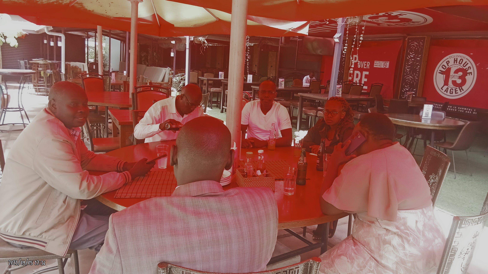

"Innovating the Future, One Line of Code at a Time"
At Bartingei Associates, our team of visionary software engineers is dedicated to crafting cutting-edge solutions that drive your success. Harnessing the power of technology, we transform your ideas into reality with precision, passion, and unparalleled expertise.

For more images click here
"Our Journey to Excellence in Software Engineering"
Founded by a team of seasoned software engineers, Bartingei Associates emerged from a shared passion for technology and innovation. With years of industry experience, we have honed our skills in developing robust, high-performance software solutions. Our journey began with a commitment to excellence and a vision to empower businesses through intelligent technology. Today, we stand as a trusted partner, delivering tailored solutions that drive efficiency, growth, and success. At Bartingei Associates, our background in cutting-edge software engineering ensures that your projects are in expert hands, from initial concept to final implementation.
Location Description for Bartingei Associates
Bartingei Associates is conveniently located in the heart of Nairobi's Central Business District (CBD), offering easy accessibility and a vibrant business environment. Our office is situated on the 5th floor of the prestigious Eco Tower, a landmark building renowned for its modern architecture and prime location.
Address:
Bartingei Associates
Eco Tower, 5th Floor
Kenyatta Avenue
Nairobi, Kenya
Landmarks and Accessibility:
Kenyatta Avenue: One of the main thoroughfares in Nairobi CBD, Kenyatta Avenue is lined with key landmarks and provides straightforward access to our office. The street is well-known for its bustling atmosphere and proximity to essential services.
Nairobi Central Park: Just a short walk from our office, Nairobi Central Park offers a serene escape amidst the city's hustle and bustle. It's a great place for a relaxing break or informal meetings in a natural setting.
Public Transport: Our location is well-served by various modes of public transport. The Kencom bus station and Nairobi Railway Station are within walking distance, ensuring easy access for clients and employees commuting from different parts of the city.
Parking Facilities:
For those driving to our office, Eco Tower offers secure parking facilities. Additional parking options are available at nearby parking lots and buildings.
Nearby Amenities:
The vicinity is rich with amenities, including banks, restaurants, cafes, and retail stores, catering to all your business and personal needs. The Sarova Stanley Hotel and Hilton Nairobi are also nearby, providing excellent accommodation and conference facilities.
At Bartingei Associates, we pride ourselves on being at a location that is not only central but also vibrant and conducive to business growth. We look forward to welcoming you to our office.